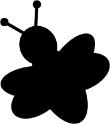

How to Make Your Own Beeswax Candle
A fun and exciting activity of adults and children alike!

Materials Needed:
- Glue dot
- Candle tin
- Cotton wick
- Wick stabilizer
- Melting pot
- Measuring cup
- Beeswax beads
- Stovetop pot
- Stovetop burner
- Water
- Scissors
- Stiring stick
- Thermometer
- Fragrance
- Colored wax block
Whether you are looking for an afternoon project with the kids or a homemade gift for a close friend, making your own beeswax candle is the perfect choice. This easy to follow, how-to guide will walk you through the fun process of creating, coloring, and scenting an adorable beeswax candle. Collect the materials listed below online or at your local craft store, and click “Get Started Here” to begin your candle making experience.